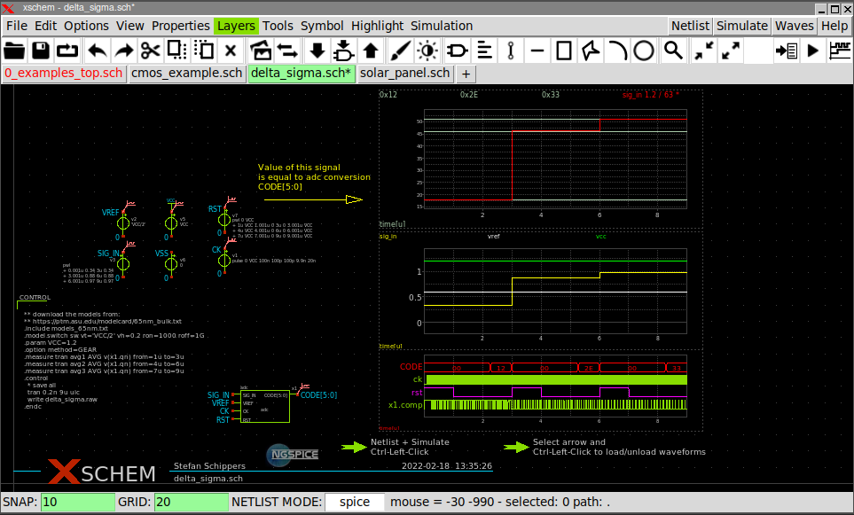

PREV
UP
NEXT
XSCHEM SCHEMATIC EDITOR PRESENTATION OUTLINE
Why Xschem?
Xschem History
Xschem is / is not
Feature List
Hierarchy, symbols and component instances
Instance attributes and parametrized subcircuits
Simulation
Wave viewing
Skywater 130nm PDK integration
Roadmap
Conclusions
Contacts

</body> </html>